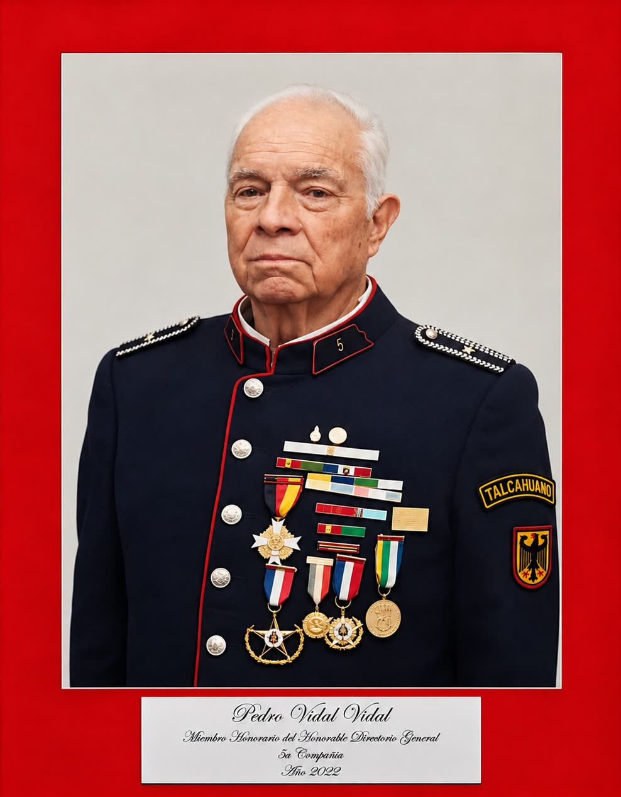
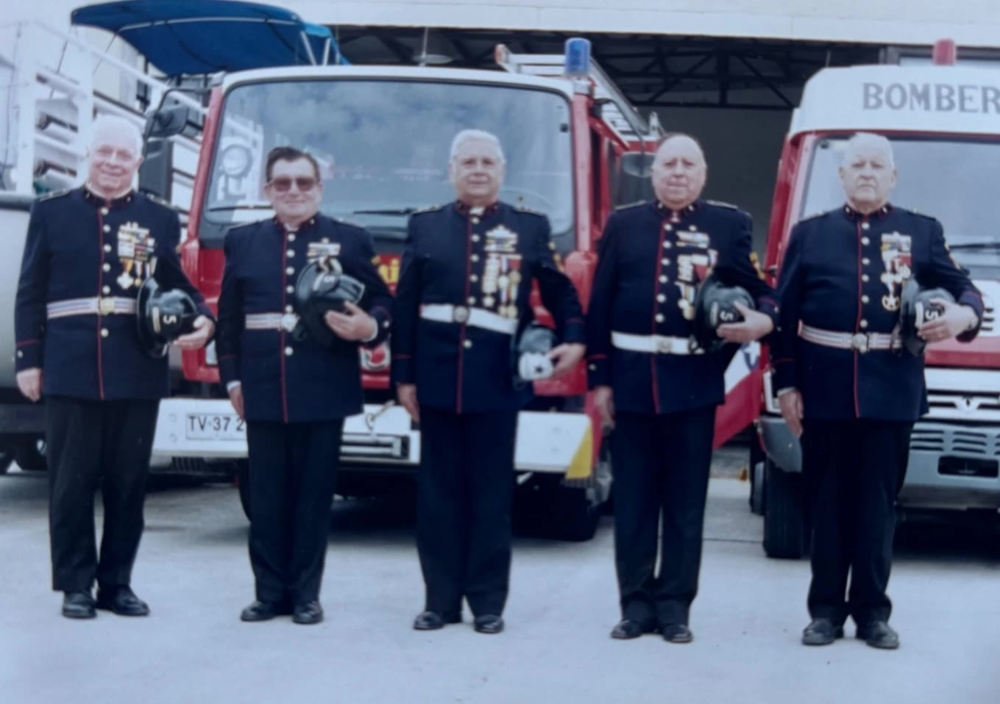
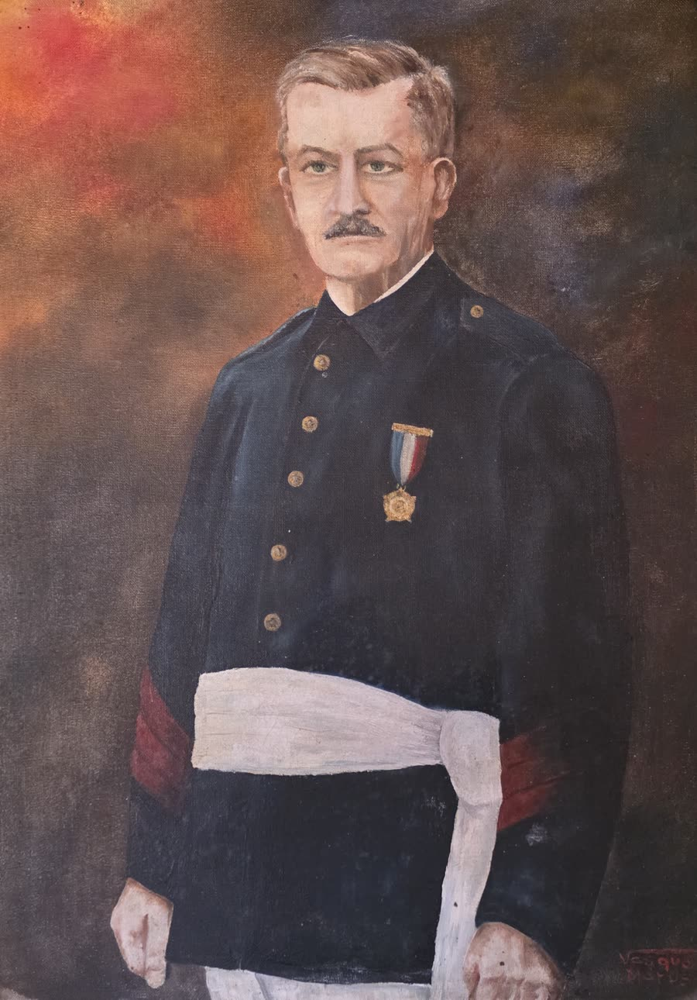
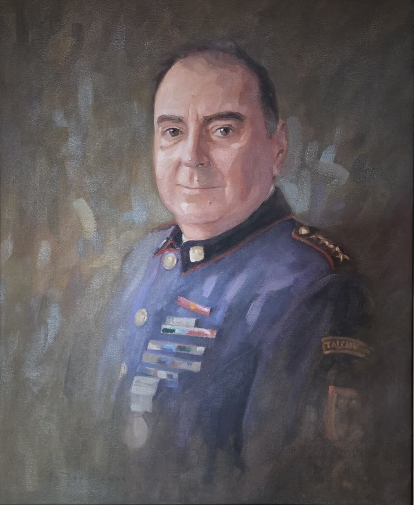
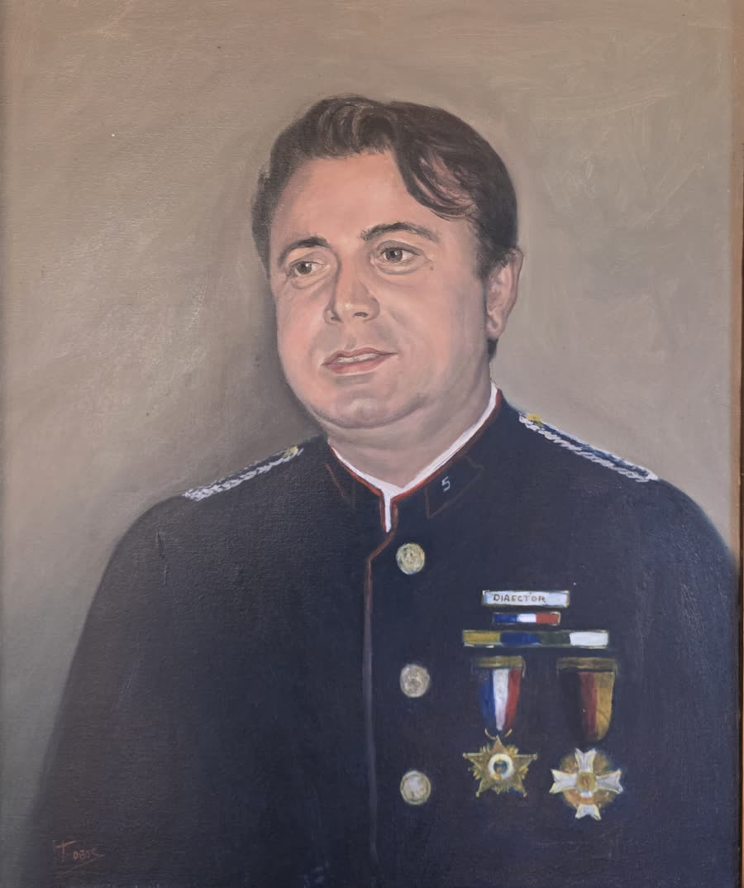
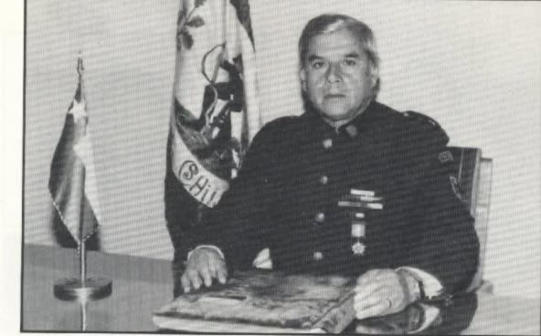
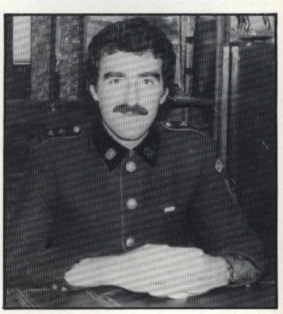
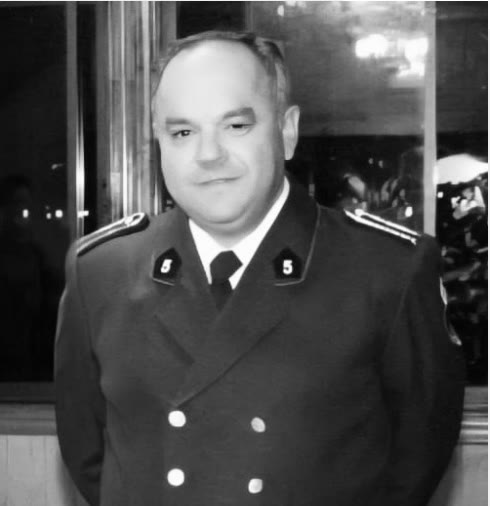
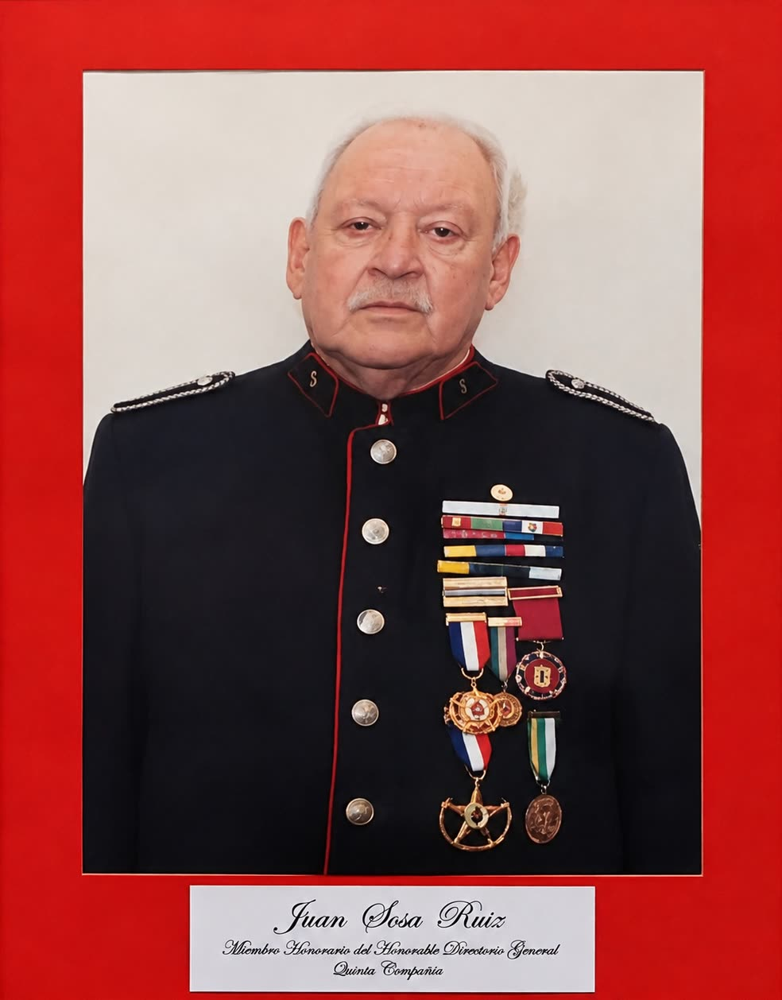
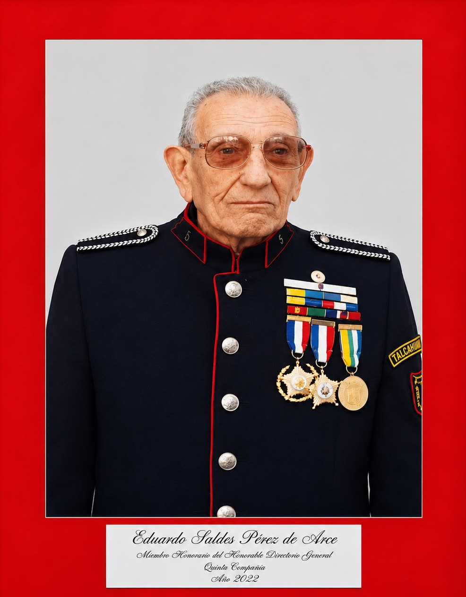

Voluntario insigne. Miembro Honorario del Honorable Directorio General del Cuerpo de Bomberos de Talcahuano.


Otros quintinos históricos

Eugenio Delpín LepreMiembro fundador y primer Capitán de la Quinta (1908). Se inició como bombero en Valdivia, donde sirvió entre 1895 y 1897. Desde 1908 se destacó por el entusiasmo que dedicó al servicio de la institución. Llegó a ser Comandante y Superintendente del Cuerpo de Bomberos de Talcahuano (este último cargo entre 1928 y 1934) y se volcó durante toda su vida al servicio del Cuerpo y de su querida compañíaLeer más Ricardo Setz SchlegelMiembro fundador de la Quinta y su primer Secretario-Tesorero (1908). Ocupó los cargos de Tesorero, Secretario y miembro de la Junta Calificadora de Cuentas. Miembro Honorario desde el 29 de enero de 1960. En 1932 se retiró de la compañía, pero siguió siendo un activo colaborador hasta su muerte. Dejó esa labor a su esposa Nora Hoffmann, destacada dama quintina, que por años siguió la tarea encomendada por su esposoLeer más
Ricardo Setz SchlegelMiembro fundador de la Quinta y su primer Secretario-Tesorero (1908). Ocupó los cargos de Tesorero, Secretario y miembro de la Junta Calificadora de Cuentas. Miembro Honorario desde el 29 de enero de 1960. En 1932 se retiró de la compañía, pero siguió siendo un activo colaborador hasta su muerte. Dejó esa labor a su esposa Nora Hoffmann, destacada dama quintina, que por años siguió la tarea encomendada por su esposoLeer más
 Eduardo Schuyler ZiebrechtMiembro fundador y primer Oficial de Mar de la Quinta (1908). Vicecónsul del Imperio alemán. Fue Teniente, Capitán y Director de la compañía, y luego Comandante y Superintendente del Cuerpo de Bomberos de Talcahuano (Superintendente entre 1917 y 1923, y Superintendente Honorario entre 1924 y 1938). Destacado vecino y miembro activo de la compañía hasta su muerte, fue uno de los personajes más influyentes de su historia, tanto por su labor de dirección en la compañía y en el Cuerpo de Bomberos como por su influencia en el Talcahuano de comienzos del siglo XX, y por su destacada trayectoria fue nombrado alcalde de la ciudad. Fue además Subgerente de Mauricio Gleisner & Cía., una de las empresas importadoras más importantes de la época. Durante la Primera Guerra Mundial recayó en él gran parte de la responsabilidad de coordinar las actividades y los vínculos entre la Armada chilena, la colonia alemana, el Gobierno imperial y la tripulación del DresdenLeer más
Eduardo Schuyler ZiebrechtMiembro fundador y primer Oficial de Mar de la Quinta (1908). Vicecónsul del Imperio alemán. Fue Teniente, Capitán y Director de la compañía, y luego Comandante y Superintendente del Cuerpo de Bomberos de Talcahuano (Superintendente entre 1917 y 1923, y Superintendente Honorario entre 1924 y 1938). Destacado vecino y miembro activo de la compañía hasta su muerte, fue uno de los personajes más influyentes de su historia, tanto por su labor de dirección en la compañía y en el Cuerpo de Bomberos como por su influencia en el Talcahuano de comienzos del siglo XX, y por su destacada trayectoria fue nombrado alcalde de la ciudad. Fue además Subgerente de Mauricio Gleisner & Cía., una de las empresas importadoras más importantes de la época. Durante la Primera Guerra Mundial recayó en él gran parte de la responsabilidad de coordinar las actividades y los vínculos entre la Armada chilena, la colonia alemana, el Gobierno imperial y la tripulación del DresdenLeer más
 Luis de la Cerda Schuyler(1904–1983). Médico de profesión, ingresó a la Quinta en 1928. En 1932 fue elegido Director de la compañía, a la que guio con singular éxito, lo que hizo que en 1936 los bomberos de todas las compañías lo eligieran Superintendente del Cuerpo de Bomberos de Talcahuano, cargo que ocupó ininterrumpidamente por más de 46 años. Fue un destacado y querido vecino de Talcahuano, cuya vocación por el servicio público lo hizo ser admirado y recordado hasta nuestros díasLeer más
Luis de la Cerda Schuyler(1904–1983). Médico de profesión, ingresó a la Quinta en 1928. En 1932 fue elegido Director de la compañía, a la que guio con singular éxito, lo que hizo que en 1936 los bomberos de todas las compañías lo eligieran Superintendente del Cuerpo de Bomberos de Talcahuano, cargo que ocupó ininterrumpidamente por más de 46 años. Fue un destacado y querido vecino de Talcahuano, cuya vocación por el servicio público lo hizo ser admirado y recordado hasta nuestros díasLeer más
 Juan Guillermo Sosa Severino(1900–1983). Ingresó a la Quinta el 31 de julio de 1919. Apasionado de la causa, se convirtió rápidamente en un destacado bombero y desempeñó todos los cargos ejecutivos de la compañía. Pasó a la historia del Cuerpo de Bomberos de Talcahuano con el récord de 33 años ininterrumpidos como Comandante, entre 1937 y 1970. La Brigada Juvenil lleva su nombreLeer más
Juan Guillermo Sosa Severino(1900–1983). Ingresó a la Quinta el 31 de julio de 1919. Apasionado de la causa, se convirtió rápidamente en un destacado bombero y desempeñó todos los cargos ejecutivos de la compañía. Pasó a la historia del Cuerpo de Bomberos de Talcahuano con el récord de 33 años ininterrumpidos como Comandante, entre 1937 y 1970. La Brigada Juvenil lleva su nombreLeer más

Fernando Etcheverry UrraVoluntario insigne y Miembro Honorario del Honorable Directorio General del Cuerpo de Bomberos de Talcahuano. Ingresó a la Quinta el 26 de septiembre de 1946. Fue Ayudante, Teniente y Capitán de la compañía, y Comandante y Superintendente del Cuerpo de Bomberos de Talcahuano. A nivel nacional fue Director de la Junta Nacional de Bomberos y miembro fundador de la Academia Nacional de Bomberos de Chile. Como empresario, fue Director de la Cámara de la Producción y del Comercio de Concepción entre 1980 y 1995, y fue designado vecino destacado por la I. Municipalidad de TalcahuanoLeer más
Ariel Duffau GálvezUno de los bomberos más queridos y respetados de la Quinta, que dejó una huella imborrable en una generación de bomberos. Doctor en Filosofía de la Universidad Católica de Lovaina, ingresó a la compañía el 19 de noviembre de 1966. Fue Capitán entre 1980 y 1981 y Director entre 1997 y 2003. Como bombero fue el gestor de la construcción del nuevo cuartel de Villa Independencia (2001) y artífice de uno de los períodos de mayor bienestar y progreso que recuerde la compañía. Tuvo además una intensa vida pública, con diversos cargos de responsabilidad política y universitaria. Falleció tempranamente, en 2003, siendo Director de la compañía. Su partida se recuerda como una de las manifestaciones populares más masivas y espontáneas que haya visto la ciudad, cuyos habitantes se volcaron a las calles a despedir a uno de sus hijos más queridosLeer más Adonai Ayala AyalaVoluntario insigne y Miembro Honorario del Honorable Directorio General del Cuerpo de Bomberos de Talcahuano. Ingresó a la Quinta el 1 de agosto de 1943. Fue Secretario de la compañía en varias ocasiones y miembro de la Junta de Disciplina. Se le recuerda como una persona de buena voluntad, que decía las cosas de frente y con franqueza, lo que marcó su forma de ver el funcionamiento de la compañíaLeer más
Adonai Ayala AyalaVoluntario insigne y Miembro Honorario del Honorable Directorio General del Cuerpo de Bomberos de Talcahuano. Ingresó a la Quinta el 1 de agosto de 1943. Fue Secretario de la compañía en varias ocasiones y miembro de la Junta de Disciplina. Se le recuerda como una persona de buena voluntad, que decía las cosas de frente y con franqueza, lo que marcó su forma de ver el funcionamiento de la compañíaLeer más

Caupolicán Cisternas LagosNació el 26 de junio de 1930 e ingresó a la Quinta en 1950, donde permaneció hasta su fallecimiento, 66 años después. Su profesionalismo lo llevó a asumir diversos cargos, pero será recordado por haber sido Tesorero General del Cuerpo de Bomberos de Talcahuano durante 48 años ininterrumpidos. En 2014 fue designado Bombero Insigne de Chile y vecino destacado por la I. Municipalidad de TalcahuanoLeer más Arman Eduardo Saldes SantuberVoluntario insigne. Nació el 6 de julio de 1929 e ingresó a la Quinta el 2 de enero de 1947. Fue Teniente de la compañía y Ayudante General del Cuerpo de Bomberos de TalcahuanoLeer más
Arman Eduardo Saldes SantuberVoluntario insigne. Nació el 6 de julio de 1929 e ingresó a la Quinta el 2 de enero de 1947. Fue Teniente de la compañía y Ayudante General del Cuerpo de Bomberos de TalcahuanoLeer más

Pedro Javier Etcheverry SchröerVoluntario insigne. Nació el 15 de junio de 1956 e ingresó a la Quinta el 27 de noviembre de 1974. Fue Ayudante, Teniente y Capitán de la compañía, y Comandante del Cuerpo de Bomberos de Talcahuano durante 15 añosLeer más
Juan Alberto Sosa GonzálezVoluntario honorario. Nació el 3 de noviembre de 1965 e ingresó a la Quinta el 23 de septiembre de 1986. Fue Teniente y Capitán de la compañía durante 10 años, y recibió el premio por 35 años de servicioLeer más
Juan Sosa RuizVoluntario insigne. Miembro Honorario del Honorable Directorio General del Cuerpo de Bomberos de TalcahuanoLeer más
Eduardo Saldes Pérez de ArceVoluntario insigne. Miembro Honorario del Honorable Directorio General del Cuerpo de Bomberos de TalcahuanoLeer más Pedro Vidal VidalVoluntario insigne. Miembro Honorario del Honorable Directorio General del Cuerpo de Bomberos de TalcahuanoLeer más Arnulfo Urquiza LópezDestacado voluntario de la Quinta. Diseñó, escribió y adaptó el himno actual de la compañía. Se le recuerda como una persona sencilla, de buena voluntad y visionariaLeer más
Arnulfo Urquiza LópezDestacado voluntario de la Quinta. Diseñó, escribió y adaptó el himno actual de la compañía. Se le recuerda como una persona sencilla, de buena voluntad y visionariaLeer más